設計課題：96GBのVRAMで32Bモデルを何人が使えるか
このページでは、96GBのVRAMに32Bモデルを配置し、32Kコンテキストを使う利用者を何本同時に処理できるかを設計課題として扱う。モデル重みはFP8またはINT8相当で理論約32GB、KVキャッシュはQwen3-32B相当の構造をBF16で保持し、1トークン当たり256KiBと仮定する。
この条件では、32KのSequence一つにつきKVキャッシュが約8GiB必要になる。重み以外の領域をすべてKVへ割り当てる単純計算でも、同時Sequenceは7本程度にとどまる。しかし、これはWorkspace、Runtime、Activation、量子化Metadata、断片化、運用上の余裕を無視した値である。最終的な設計値を得るには、重み、KV、コンテキスト、速度、Reasoningを順番に予算へ入れる必要がある。
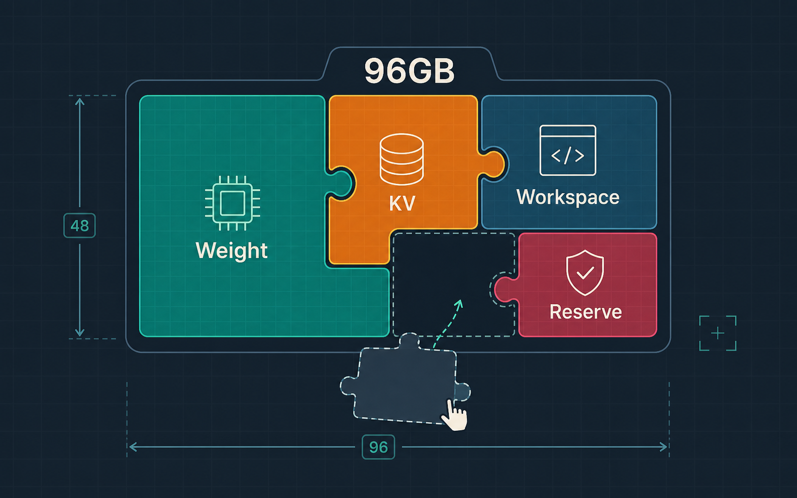
- Qwen3-32B 相当（Dense）
- 量子化：重み INT4（Q4）／本課題は重み約32GB
- KV dtype：BF16
- 平均 Context：32K tokens
- VRAM：96 GB
- 複数同時利用
最初に固定すべき入力条件
キャパシティ設計で最初に行うべきことは、比較条件を固定することである。同じモデル名でも、量子化方式、推論Runtime、KV dtype、Context length、出力長、Batch、Concurrencyが異なれば、VRAM使用量とtok/sは変わる。Prompt CacheやSpeculative Decodingの有無も結果へ影響するため、条件の異なるベンチマーク値を同じ表で直接比較してはいけない。
平均値だけでなく、ピーク時の分布も必要である。入力長、出力長、Reasoning Token、同時Sequence数について、平均とp95を定義する。さらに、SLAとしてTTFT、最初のVisible TokenまでのTTFV、User tok/s、完了時間、Aggregate throughputのどれを重視するかを決める。モデルの選定は、その後に行う。
| 変数 | 例 | 容量への影響 | 速度への影響 |
|---|---|---|---|
| Model / Params | 32B | 大 | 大 |
| Quantization | INT4 / FP8 | 大 | 中 |
| Runtime | vLLM / SGLang / TRT-LLM | 中 | 大 |
| Context length | 8K / 32K | 大(KV) | 大 |
| Output length | 500 / 600 | 小 | 中 |
| Batch / Concurrency | 1 / N | 大(KV) | 大 |
| Prompt Cache | on / off | 小 | 大(TTFT) |
| Speculative Decoding | on / off | 中 | 大 |
| Reasoning Effort | low〜high | 大(KV) | 大 |
Step 1：モデルを置くためのVRAMを見積もる
モデル重みの理論容量は、「パラメータ数[B] × bit数 ÷ 8」で求められる。32BならBF16で約64GB、8bitで約32GB、4bitで約16GBとなる。70Bでは約140GB、70GB、35GB、753Bでは約1,506GB、753GB、376.5GBである。これらは10進GBで表した重みだけの理論値である。
実際のVRAM予算には、モデル重みに加えてKVキャッシュ、Activation、推論エンジンのWorkspace、通信バッファ、量子化ScaleやZero Point、Allocatorの管理領域、断片化への余裕を含める。したがって、重みの理論値とGPU容量の差が小さい構成は、モデルファイルを読み込めたとしても実用的なコンテキストや同時実行数を確保できない。
| 規模 | BF16 | INT8 | INT4 |
|---|---|---|---|
| 32B | 64 GB | 32 GB | 16 GB |
| 70B | 140 GB | 70 GB | 35 GB |
| 753B | 1,506 GB | 753 GB | 376.5 GB |
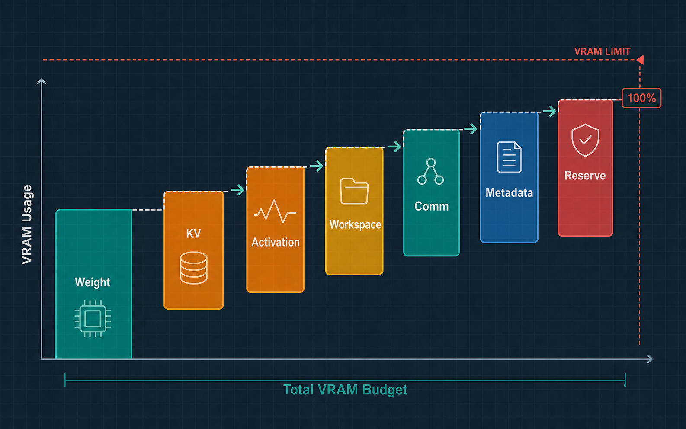
Dense と MoE は容量軸と演算軸が別
MoEでは、総パラメータ数とActive parametersも分ける必要がある。全Expertを配置するための容量は総パラメータ数で決まるが、1トークンの演算と重み読み出しには主に選択されたExpertが関係する。さらにExpert ParallelではGPU間のAll-to-All通信が加わるため、Active parametersがDense 40Bに近いからといって、Dense 40Bと同じ速度になるとは限らない。
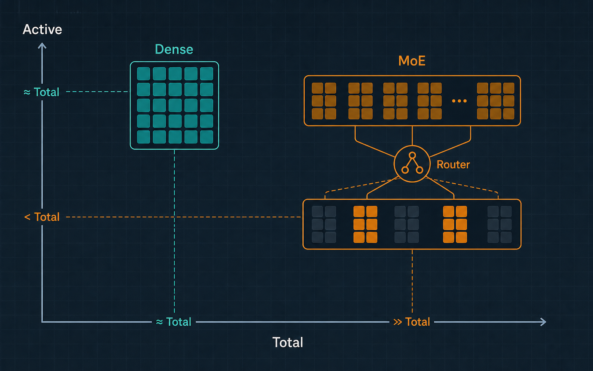
Step 2：KV bytes/token を求める
MHAまたはGQAモデルのKVキャッシュは、「2 × Layers × KV Heads × Head Dimension × dtype bytes × Sequence length」で概算できる。Sequence長を掛ける前の「2 × Layers × KV Heads × Head Dimension × dtype bytes」が、1トークン当たりのKV容量である。複数Sequenceを扱う場合は、各Sequenceの現在長を合計して掛ける。
Qwen3-32B相当では、Layersが64、KV Headsが8、Head Dimensionが128、KV dtypeをBF16の2 bytesとすると、1トークン当たり262,144 bytes、すなわち256KiBになる。このため8Kで2GiB、32Kで8GiB、40Kで10GiBを1 Sequenceが消費する。FP8 KVなら概ね半分になるが、対応Kernelと精度を確認する必要がある。計算時には、重みで使うGBとKVで使うGiBを最終的にbytesへそろえる。
# Qwen3-32B: L=64, Hkv=8, Dh=128, BF16=2
2 × 64 × 8 × 128 × 2 = 262,144 bytes/token = 256 KiB/token
| Sequence長 | BF16 KV | FP8 KV |
|---|---|---|
| 8K | 2 GiB | 1 GiB |
| 32K | 8 GiB | 4 GiB |
| 40K | 10 GiB | 5 GiB |
MLA（GLM-5.2）は別式・別構造
MLAを使うモデルは同じ式では扱えない。GLM-5.2について、576次元のlatent KVを78層でBF16保持すると仮定したコア部分は、1トークン当たり89,856 bytes、約87.75KiBとなる。この仮定では32Kで約2.74GiB、128Kで約10.97GiB、1,048,576トークンで約87.75GiBである。ただし、DSA Indexer、MTP、Block Table、Allocator、Workspaceなどを含まない概算である。
| Context | MLAコアKV概算 |
|---|---|
| 32K | 約2.74 GiB |
| 128K | 約10.97 GiB |
| 1,048,576 | 約87.75 GiB |
概算 78層×576次元×2byte=89,856 bytes/token。MLAコア部分のみ。
Step 3：最大同時Sequence数を求める
最大同時Sequence数は、まず総VRAMから重み、Workspace、Runtime、通信バッファ、予約領域を引き、KVへ利用できる容量を求める。次に、その容量を「KV bytes/token × 平均Sequence長」で割る。ここでのSequence長は入力だけではなく、入力に、その時点までに生成した出力とReasoningを加えた長さである。
96GBのVRAMから理論32GBの重みだけを引くと、KV候補は64GBとなる。32KのBF16 KVは約8GiB、すなわち約8.59GBなので、bytesへ単位をそろえると64GB ÷ 8.59GBは約7.4となり、切り捨てて7 Sequenceである。ここからWorkspaceや予約領域を確保するため、Productionの上限は7未満になる。
⚙ 同時Sequence数 計算機
Paged KV・allocator・断片化・Prefix Cache などを省略した概算。予約を 0 にすると本文の「7本」を再現できる。
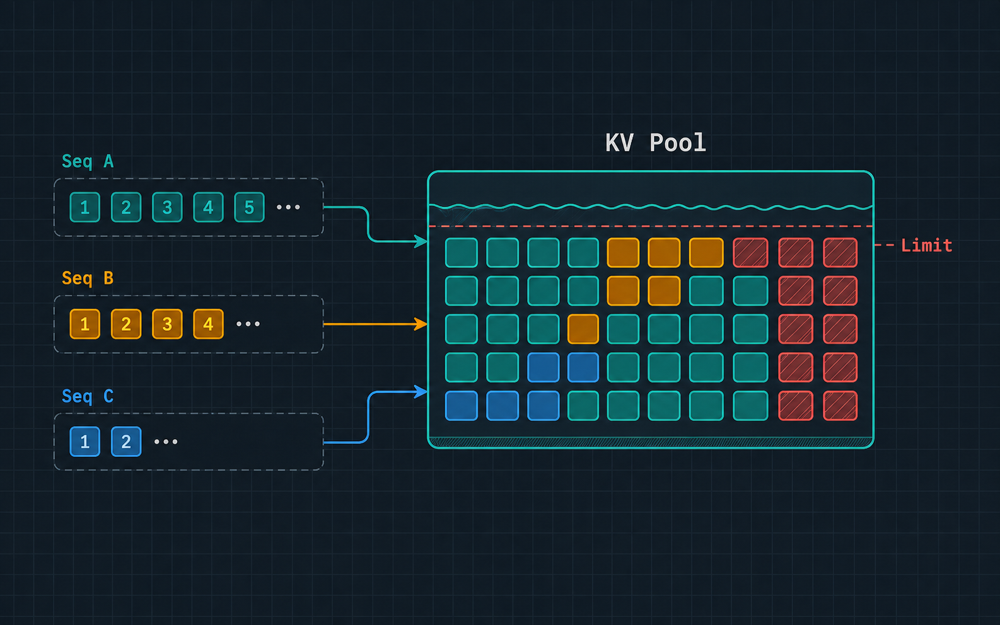
実際の推論エンジンではPaged KVにより可変長Sequenceを効率よく詰められるが、Block単位の未使用領域、Allocator metadata、Prefix Cache、Sequence長のばらつきも生じる。そのため、設計値は理論上限ではなく、p95の入力長と出力長を使った負荷試験から決める。重要なのは利用者の総数ではなく、ピーク時のLive Token Poolである。
| 同時Seq | 平均長 | KV容量 |
|---|---|---|
| 3 | 8K | 6 GiB |
| 10 | 8K | 20 GiB |
| 10 | 32K | 80 GiB |
| 20 | 32K | 160 GiB |
const kvBytesPerToken = 2 * layers * kvHeads * headDimension * kvDtypeBytes; const kvBudgetBytes = totalVramBytes - weightBytes - workspaceBytes - reserveBytes; const kvBytesPerSeq = kvBytesPerToken * averageSequenceTokens; const maxConcurrent = Math.floor(kvBudgetBytes / kvBytesPerSeq);
Step 4：コンテキスト予算を設計する
コンテキスト予算では、「Input + Reasoning + Visible Output + Tool Result ≤ Context Window」を満たす必要がある。モデルの最大コンテキスト長をそのまま最大入力長として公開すると、出力やReasoningの領域がなくなり、回答途中の打ち切りやTool結果の欠落が発生する。
たとえば40,960トークンのモデルへ、32,000トークンの入力、8,000トークンのReasoning、1,000トークンのVisible Outputを要求すると、合計41,000トークンとなり上限を40トークン超える。この例では入力を減らすか、Reasoningや出力の上限を下げる必要がある。ProductionではAdvertised、Serving、Applicationの三段階を分け、Application contextには運用上の安全余裕を持たせる。
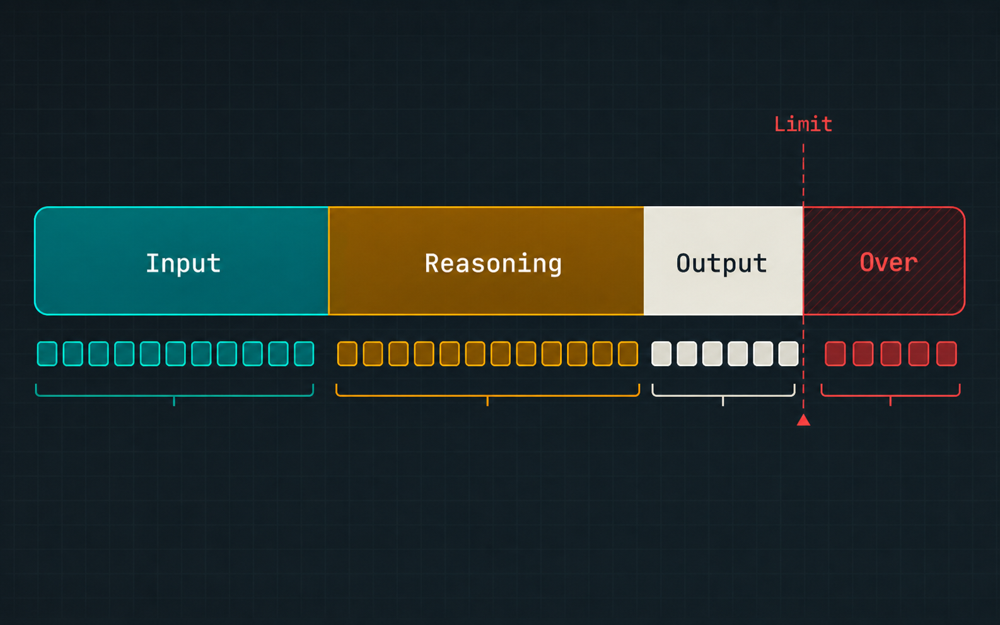
| 種類 | 意味 |
|---|---|
| Advertised | モデル公称の最大値 |
| Serving | 推論サーバーの設定値 |
| Application | アプリが許可する上限 |
Step 5：ユーザー体感を tok/s へ分解する
ユーザーが感じる速度を評価するには、最初のトークンが返るまでのTTFTと、その後のDecode速度を分離する。User tok/sは、生成トークン数をNとすると、おおむね「N−1 ÷ 最終Token時刻と最初のToken時刻の差」で求められる。平均Inter-Token Latencyはその逆数であり、7 tok/sなら約143ms、25 tok/sなら40ms、50 tok/sなら20ms、100 tok/sなら10msである。
総応答時間は、概ね「TTFT +（出力トークン数−1）÷ tok/s」で見積もれる。600トークンを生成する場合、Decode部分だけで7 tok/sなら約85.6秒、25 tok/sなら約24秒、50 tok/sなら約12秒、100 tok/sなら約6秒かかる。これにQueue待ちとPrefill時間が加わる。
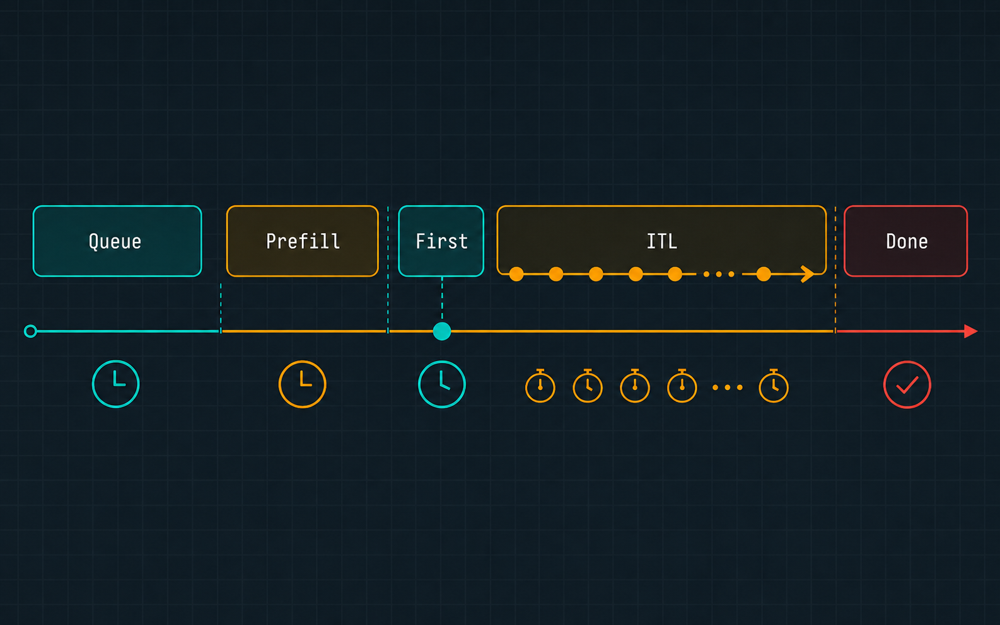
| tok/s | 平均ITL | 600トークン生成 |
|---|---|---|
| 7 | 約143ms | 約85.6秒 |
| 25 | 40ms | 約24秒 |
| 50 | 20ms | 約12秒 |
| 100 | 10ms | 約6秒 |
| 1,000 | 1ms | 約0.6秒 |
Aggregate tok/sは、測定期間中に全リクエストが生成したトークン数の合計を時間で割ったサーバー全体の処理能力である。10人が同時に25 tok/sを維持できれば250 tok/sになるが、サーバーが250 tok/sを出したからといって各利用者へ25 tok/sが均等に配られるとは限らない。Scheduler、Batch構成、長いSequenceの混在、Queue時間を含めてUser側とAggregate側を別々に計測する。
Step 6：帯域から Decode Roofline を出す
- tok/sは、おおむね実効帯域÷重み・KV読出量です。
- batchを増やすと重みを再利用でき、帯域効率が上がります。
- その結果、全体のスループットも高まります。
- 各ユーザーのtok/sとは分けて評価します。
参考: Qiita「なぜLLMは遅いのか？ KV CacheとSpeculative Decodingの数学的理解」
Batch 1のDecodeでは、各トークンを生成するたびに大量の重みを読み出すため、多くの場合は演算性能よりメモリ帯域が先に制約となる。短いコンテキストのDenseモデルであれば、粗い上限は「実効メモリ帯域 ÷ 重み容量」で求められる。より一般には、1トークン時間は、演算時間、重みとKVの転送時間、GPU間通信時間の最大値に、KernelやSchedulerのオーバーヘッドを足したものになる。
| HW | 容量 | 帯域 |
|---|---|---|
| RTX 5090 | 32 GB | 1,792 GB/s |
| RTX 3090 | 24 GB | 936 GB/s |
| A100 80GB PCIe | 80 GB | 1,935 GB/s |
| A100 80GB SXM | 80 GB | 2,039 GB/s |
| DGX Spark | 128 GB | 273 GB/s |
| Mac Studio M3 Ultra | 最大512 GB | 819 GB/s |
下表の理論帯域を使うと、8B Q4、32B Q4、70B Q4のRooflineを同じ条件で比較できる。RTX 5090の32B Q4は112 tok/s、A100 80GB SXMの70B Q4は58.3 tok/s、DGX Sparkの70B Q4は7.8 tok/s、Mac Studio M3 Ultraの70B Q4は23.4 tok/sとなる。一方、RTX 5090とRTX 3090は70B Q4の理論重み35GBがVRAM容量を超えるため、単体では搭載できない。
| HW | 8B Q4 (4GB) | 32B Q4 (16GB) | 70B Q4 (35GB) |
|---|---|---|---|
| RTX 5090 | 448 | 112 | 容量不足 |
| RTX 3090 | 234 | 58.5 | 容量不足 |
| A100 80GB SXM | 510 | 127 | 58.3 |
| DGX Spark | 68.3 | 17.1 | 7.8 |
| Mac Studio M3 Ultra | 205 | 51.2 | 23.4 |
ROOFLINE Dense・Batch1・Q4・KV無視・オーバーヘッド無視の帯域上限。実測ではない。
これらは、Dense、Batch 1、短いContext、Q4重み、KV無視、オーバーヘッド無視という条件のRooflineである。実測値はRuntime、量子化Kernel、Kernel起動、演算効率、通信、Speculative Decodingなどで変わる。MoEでは全重みではなくShared WeightとActive Expert Weightを中心に読み出すが、RoutingやAll-to-Allが加わるため、総パラメータ数でもActive parametersだけでも正確なtok/sは決まらない。
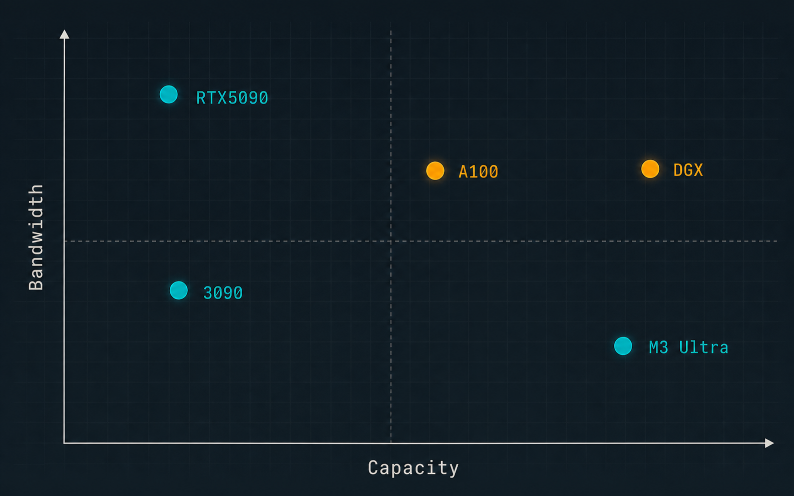
Step 7：長いContextによる速度低下とOOM
コンテキストが長くなると、容量だけでなくDecode速度も低下する。Qwen3-32B相当のBF16 KVでは、8Kで約2GiB、32Kで約8GiBのKVを保持し、次のトークンを生成するときに現在のContextへ対応するKVを読み出す。したがってRooflineの分母は重みだけではなく、「重み読み出し + KV読み出し」となる。
32B Q4を理論16GBとした場合、RTX 5090の上限はKV無視の112 tok/sから、8Kで98.7 tok/s、32Kで72.9 tok/sへ下がる。DGX Sparkは17.1 tok/sから15.0 tok/s、11.1 tok/sへ下がる。これは帯域だけから求めた理論値であり、実際のRuntimeではさらに低くなる可能性がある。
| HW（32B Q4） | KV無視 | 8K | 32K |
|---|---|---|---|
| RTX 5090 | 112 | 98.7 | 72.9 |
| RTX 3090 | 58.5 | 51.6 | 38.1（OOM） |
| A100 80GB SXM | 127 | 112 | 82.9 |
| DGX Spark | 17.1 | 15.0 | 11.1 |
| Mac Studio M3 Ultra | 51.2 | 45.1 | 33.3 |
RTX 3090では、32B Q4の重み16GBと32KのKV約8GiBを合計すると約24.6GBになり、24GBのVRAMを超える。表上で38.1 tok/sというRooflineを計算できても、実際にはモデルの管理領域やWorkspaceを置く前に容量不足である。速度を計算する前に、構成がメモリへ収まるかを確認しなければならない。
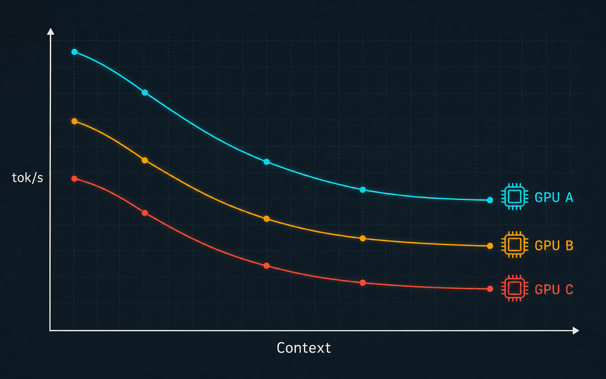
Step 8：Reasoning を追加負荷として計上する
Reasoningモデルでは、Visible Outputだけを出力長として扱うと、待ち時間と容量を過小評価する。総生成量は「Reasoning tokens + Visible answer tokens + Tool callやformat tokens」であり、完了時間は概ね「Queue + Prefill + 総生成量 ÷ Decode tok/s + Tool実行時間」となる。Reasoningが回答より前に非表示で生成される場合、TTFVには「Reasoning tokens ÷ tok/s」が加わる。
Qwen3-32B相当、BF16 KV 256KiB/token、Visible Output 500トークン、50 tok/sという仮定では、Reasoningなしの完了時間は10秒である。Reasoningが1,024トークンなら総生成1,524トークンで約30.5秒、4,096トークンなら4,596トークンで約1分32秒、16,384トークンなら約5分38秒となる。追加KVはそれぞれ約0.25GiB、1GiB、4GiBである。
⚙ Reasoning 体感時間＆KV 計算機
4,096 Reasoning Tokenと500 Visible Tokenを生成する場合、7 tok/sでは最初の回答が見えるまで約9分45秒、完了まで約10分57秒かかる。50 tok/sでは約1分22秒と約1分32秒、1,000 tok/sでは約4.1秒と約4.6秒である。Reasoning負荷が大きいほど、Decode性能の差がユーザー体感へ直接表れる。
| Reasoning | 総生成 | なし比 | 完了(50tok/s) | 追加KV |
|---|---|---|---|---|
| 0 | 500 | 1.00× | 10秒 | 0 |
| 1,024 | 1,524 | 3.05× | 30.5秒 | 0.25 GiB |
| 4,096 | 4,596 | 9.19× | 1分32秒 | 1 GiB |
| 16,384 | 16,884 | 33.8× | 5分38秒 | 4 GiB |
| 25,000 | 25,500 | 51× | 8分30秒 | 約6.1 GiB |
| tok/s | Reasoning OFF完了 | 最初の回答まで | Reasoning ON完了 |
|---|---|---|---|
| 7 | 1分11秒 | 約9分45秒 | 約10分57秒 |
| 25 | 20秒 | 約2分44秒 | 約3分4秒 |
| 50 | 10秒 | 約1分22秒 | 約1分32秒 |
| 100 | 5秒 | 約41秒 | 約46秒 |
| 1,000 | 0.5秒 | 約4.1秒 | 約4.6秒 |
下表：Reasoning=4,096＋Visible=500、Prefill/Queue/Tool除外。単一例 OpenAI 1,024＋162（約7.3×）／Gemini 297＋171（約2.74×）。
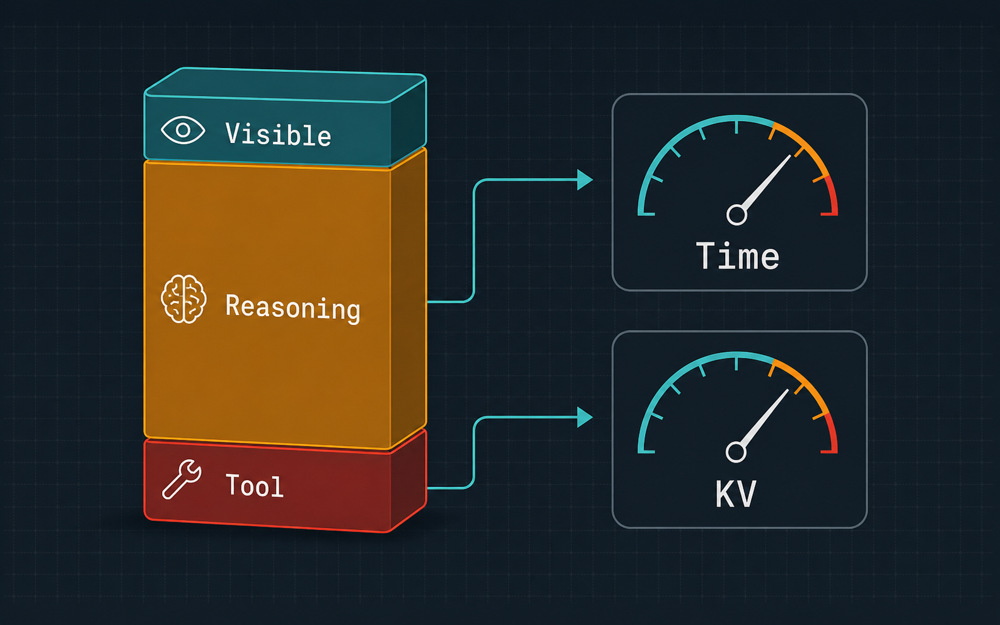
Step 9：Reasoning Effort をキャパシティ制御に使う
Reasoning Effortは固定Token Budgetではなく、モデルの思考量の分布を変える制御値として扱う。Lowを1,000トークン、Mediumを4,000トークン、Highを16,000トークンと固定して設計することはできない。同じEffortでも、簡単な依頼では短く、難しい依頼では長くなるため、モデルとタスクの組み合わせごとに平均、p95、最大値を測定する必要がある。
素材に収録された2026年のAres研究では、gpt-oss-20bを使ったTAU-Bench Retailで、常時Lowは成功率35.0%・評価全体25K Token、Mediumは47.3%・137K、Highは54.8%・1,007Kであった。動的選択は58.5%・476Kであり、High固定より少ないTokenで成功率を維持または改善した。この結果は特定のモデル、Agent評価、集計条件によるものであり、すべての業務でHighがLowの40倍になるという一般則ではない。
| Effort方式 特定ベンチ | 成功率 | Token消費 |
|---|---|---|
| 常時Low | 35.0% | 25K |
| 常時Medium | 47.3% | 137K |
| 常時High | 54.8% | 1,007K |
| Ares動的選択 | 58.5% | 476K |
Productionでは、分類や定型回答をOFFまたはMinimal、通常チャットをLow、コードや資料作成をMedium、複雑な設計やデバッグをHighとする初期方針を置ける。最初から全件をHighへ送るのではなく、Verifierで失敗したときにEffortを一段階上げ、次に強いモデルや追加WorkerへEscalationする。これによりReasoningを品質だけでなく、レイテンシと容量の制御変数として使える。
| タスク | 推奨Reasoning |
|---|---|
| 分類・検索・定型回答 | OFF / None / Minimal |
| 通常チャット・要約 | Low |
| コード生成・表計算・資料作成 | Medium |
| 複雑なデバッグ・設計・経営分析 | High |
| Deep Research・長時間Agent | High / xhigh（非同期） |
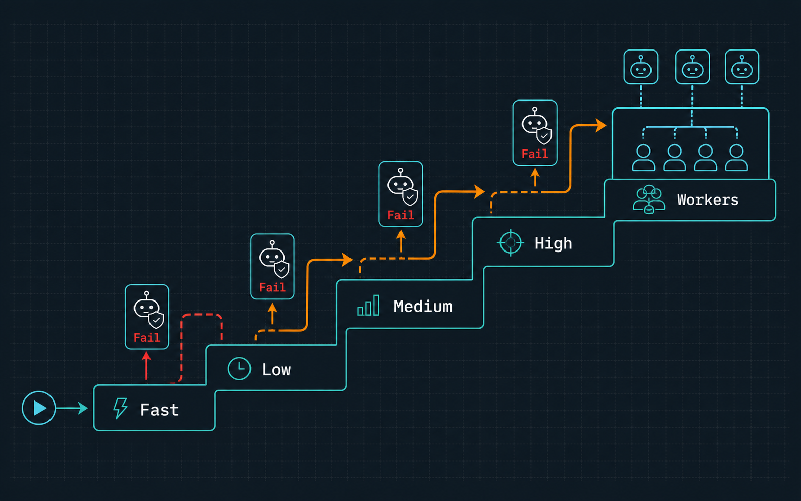
Step 10：推論サーバーと会話メモリを分離する
推論サーバーのキャパシティを安定させるには、会話履歴をサーバー内部へ抱え込まず、状態管理を外部へ分離する。Conversation APIの背後にRaw Event Store、Session Store、Structured Memory、Semantic Index、Artifact Storeを置き、Context Builderが今回必要な情報だけを選んでステートレスなLLMサーバーへ渡す。
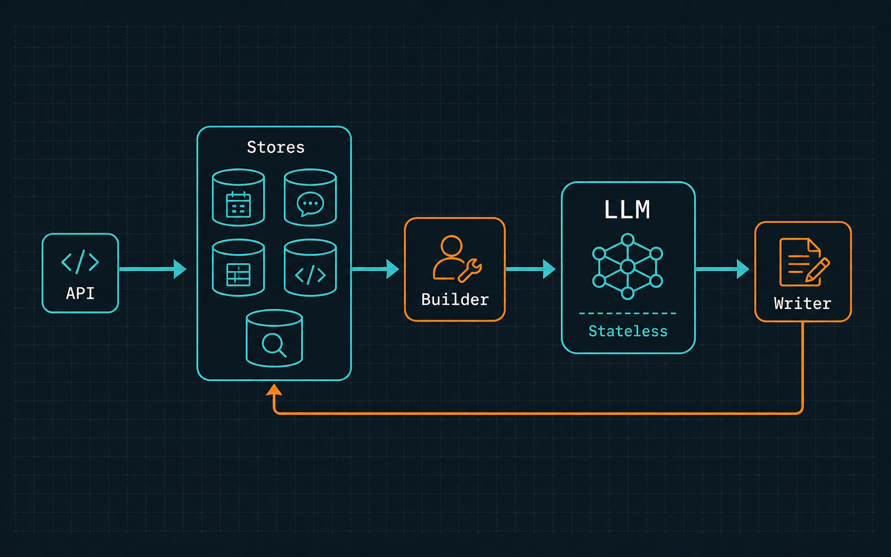
Memory Writerは、全発言を無条件に長期保存するのではなく、将来必要な事実か、推測を含むか、有効期限はあるか、どの利用者・案件に属するか、機密区分は何かを判定する。保存レコードにはtenant_id、user_id、project_id、memory_type、source_message_id、validity、confidence、sensitivity、versionなどを持たせる。氏名、設定値、期限、権限のような厳密な情報は構造化DBへ置き、Vector DBは類似検索や文書候補の絞り込みに使う。
| Memory種別 | 例 |
|---|---|
| Working | 現在のIssue・未完了作業 |
| Episodic | 先週の障害対応・会議の決定 |
| Semantic | ユーザーの役職・プロジェクト構成 |
| Procedural | コーディング規約・承認フロー |
| Artifact | ソースコード・資料・分析結果 |
# memory record (最低限のスキーマ)
tenant_id, user_id, project_id, memory_type, content,
source_message_id, created_at, valid_from, expires_at,
confidence, sensitivity, version
Raw ReasoningやKVキャッシュを長期記憶の正本にしてはいけない。どちらも実行中の作業状態であり、サイズ、監査性、モデル依存性の問題がある。次のターンへ渡すのは、最終回答、Tool Callと結果、決定事項、未解決事項、必要なら短いReasoning Summaryに限定する。この分離により、会話が長くなっても入力とKVの無制限な増加を防げる。
最終成果物：Capacity Worksheet ＆ Benchmark Runbook
Capacity Worksheetには、Model、Parameters、Quantization、総VRAM、メモリ帯域、KV dtype、平均とp95のInput、Output、Reasoning、Concurrencyを入力する。そこから重み容量、KV bytes/token、1 Sequence当たりのKV、理論最大Sequence数、Decode Roofline、目標TTFV、完了時間を計算する。理論値と仮定値には明示的なラベルを付け、GBとGiBはbytesへ統一してから演算する。
入力
- Model / Quant / VRAM / 帯域
- KV dtype
- 平均 Input / p95 Input
- 平均 Output
- Reasoning p50 / p95
- Concurrency
出力
- Weight / KV per seq
- 最大 Sequence数
- 理論 User tok/s
- 必要 TTFV
- Aggregate 目標
Benchmark Runbookでは、Model revision、Runtime、Driver、Quantization kernel、Context length、Output length、Batch、Concurrency、Prompt Cache、Speculative Decodingを固定する。計測項目にはinput_tokens、reasoning_tokens、visible_output_tokens、TTFT、TTFV、ITL、User tok/s、Aggregate tok/s、peak KV bytes、Queue時間、task success rateを含める。
# benchmark conditions (固定する)
model: qwen3-32b
quantization: int4
runtime: vllm
context_length: 32768
output_length: 600
concurrency: 8
prompt_cache: true
speculative_decoding: false
reasoning_effort: medium
最終判断は、Worksheetの理論上限ではなく、同じ条件で行った実測とSLAの比較で下す。理論値より低かった場合は、Kernel効率、KV読み出し、通信、Scheduler、Sequence長のばらつきを調査する。容量不足ならKV dtype、Application context、Reasoning方針、モデルサイズ、GPU構成の順に再設計する。
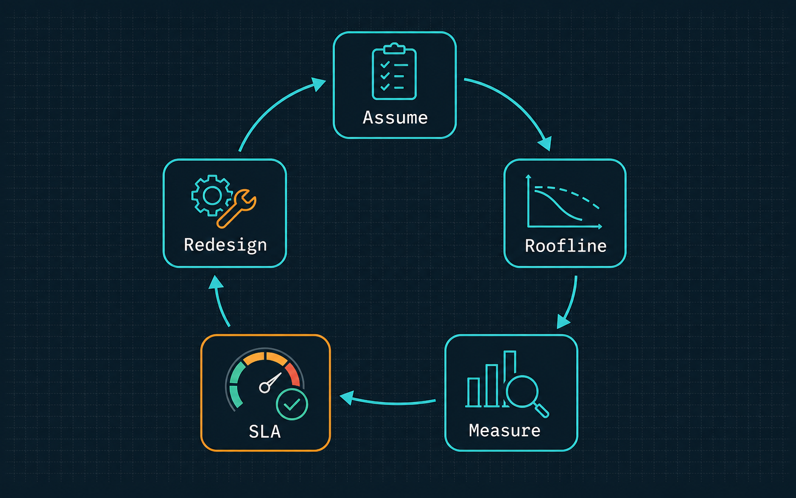